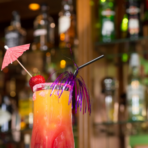
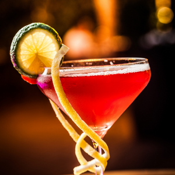
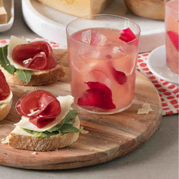
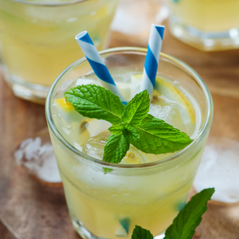
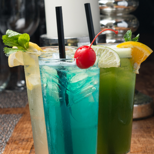

| Cocktail analcolici | ||
|---|---|---|
| San Francisco  |
Il San Francisco è un delizioso cocktail analcolico che nulla ha da invidiare ai classici drink a base alcolica. Il segreto della sua bontà sta nella fresca e aromatica miscela di succhi di frutta (arancia, pompelmo, limone e ananas) a cui si aggiunge la granatina e la soda. Una bevanda rinfrescante perfetta da sorseggiare in estate come aperitivo o durante un brunch. Ingredienti:
Preparazione:Mettete il ghiaccio nello shaker e aggiungere succo di arancia, limone, pompelmo e ananas, aggiungendo la granatina e gli albumi. Shakerate il tutto e filtrate in una coppetta o tumbler alto. Aggiungete la soda e decorate con fettine di lime. |
|
| Red Sunset  |
Aperitivo al tramonto? Il red sunset è d’obbligo, almeno per il nome. La base di succo di ananas e di arancia si arricchisce con la dolcezza del succo di pesca e una nota fresca data dalla menta. Non dimenticare il ghiaccio! Ingredienti:
Preparazione:In un bicchiere di tipo tumbler unite il succo di ananas e arancia, agigungete il ghiaccio e, successivamente, unite il succo di pesca e mescoalte con un barpoon. Decorate inserendo una fetta di limone o lime sul bordo del bicchiere. |
|
| Rose Lemon Spritzer  |
Quando la voglia di bollicine non si placa, ma il prosecco è fuori discussione l’acqua tonica al limone è una valida e ottima alternativa. Miscelatela con del succo di pompelmo e un cucchiaino di miele per un tocco dolcissimo. Ingredienti:
Preparazione:Riempite il bicchiere con del ghiaccio e versiamo il succo e l'acqua tonica. Mescoliamo aggiungendo il miele e completiamo con la guarnizione, come ad esempio condei fiori eduli ( commestibili ) |
|
| Lemon Virgin Margarita  |
Tequila e triple sec sono gli ingredienti principali del classico margarita, un classico cocktail arricchito dal lime che unisce dolce e salato grazie al sesso posto sul bordo del bicchiere. La versione virgin di questo drink prevede succo d’agave, succo di limone e lime, succo d’arancia e ghiaccio, tanto ghiaccio. Ingredienti:
Preparazione:Prendere un blender e aggiungere succo di lime, limone, arancia e lo sciroppo. Aggiungere il ghiaccio e azionate il blender per qualche secondo. Salate il bordo del bicchiere e versate il drink, decorandolo con una fetta di lime. |
|
| Tropicale  |
Un bicchiere alto, latte, sciroppo di menta e d’orzata, ghiaccio e una vigorosa girata con un bar spoon: pochi ingredienti per un mocktail fresco.Ingredienti:
Preparazione:Riempiamo lo shaker con ghiaccio e aggiungiamo gli ingredienti. Agitiamo il tutto per circa 15 secondi e versiamo il drink nel bicchiere, filtrando con uno stainer. Possiamo decorare il tutto con fette di limone o lime o foglie di menta. |
|